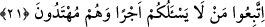

Habîbü’n-neccâr kavmini elçilere uymaya teşvik etmek için onların elçilik unvânına
işâret etmiştir.
Katâde şöyle demiştir: “Geldiğinde, ilk olarak elçileri gördü ve şöyle dedi: “Siz
yaptığınız bu dâvet karşılığında ücret istiyor musunuz?” Şu cevabı verdiler: “Biz hiçbir
ücret istemiyoruz ve Hak kelimesini yüceltmek ve Allah’ın dinini ızhar etmekten gayrı
maksadımız yoktur.” Bunun üzerine Habîb kavmine şöyle dedi:”
21. “Sizden herhangi bir ücret istemeyen bu kimselere tâbi olun, çünkü onlar
hidayete ermiş kimselerdir.”
Öğüt nasihat ve risâleti teblîğ karşılığında: ‘“Sizden herhangi bir ücret” ve mal
‘istemeyen bu kimselere tâbi olun, çünkü onlar hidayete” dînin ve dünyanın hayrına
“ermiş kimselerdir.”
Hak yola hidâyet olunmuş kimse, bu hayra başkasını da ulaştıran kimsedir. Eğer o
kimse dâvet konusunda töhmet altında değilse, elçi olmasa da ona tâbi olmak gerekir.
Kaldı ki âyette bahsedilenler hem elçi hem de hidayete ermiş kimselerdir.
Mânânın onsuz da tamam olduğu bir nükteyle sözü bitirmek demek olan îğâli kabul
eden kimselere göre bu âyet îğâle misaldir. “Çünkü onlar hidayete ermiş kimselerdir.”
sözü olmasa da mânâ tamam olur. Çünkü elçinin hidayete ermiş olduğunda şüphe yoktur.
Ancak bu sözde halkın elçilere uymasına fazladan bir teşvik vardır.
el-İrşâd’da der ki: “Tâbi olun/uyun” sözünün tekrar edilmesi te’kid içindir. Ayrıca bu
sözün tekrarı elçilerin dünyevî maksad ve menfaatlerden münezzeh olma, dünya ve
dînin hayrına erişme konusunda halkı elçilere uymaya teşvik ederek onların güzel
vasıflarını ortaya koymaya vesile edinmek içindir.”
Burada ayrıca müteşeyyihler/sahte ve yalancı şeyhler yerilmektedir. Onlar yalan ve
yaldızlı sözleriyle kendilerinin bâtıllarına meyleden ahmak ve zayıf kimselerden pek
çok mal toplarlar. Nitekim et-Te’vîlâtü’n-Nakşibendiyye’de böyle geçmektedir.
Sa’dî, Bostan’da der ki:
Nefis ve hevâ kervanın yolunu aslan yiğitler keser;
Halkın varlık/enâniyet elbisesini bunlar çıkarırlar.
Görünüşte bu kadar sararıp solmuşlardır, bu kadar zayıflamışlardır.
Ama varlık ve enâniyeti yok etmekte Mûsâ’nın asâsına benzerler
Habîbü’n-neccâr onlara nasihat edince onlar: “Sen bizim dinimize muhalefet ediyor
bu elçilere mi uyuyorsun?” dediler. Bunun üzerine Habîbü’n-neccâr şöyle dedi: